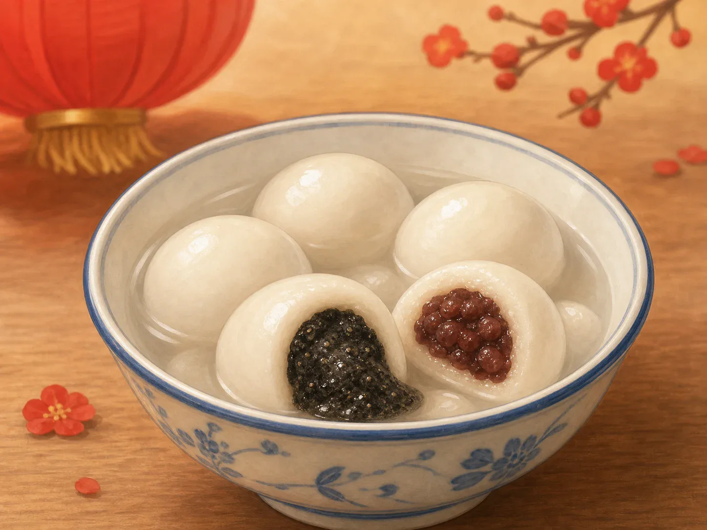
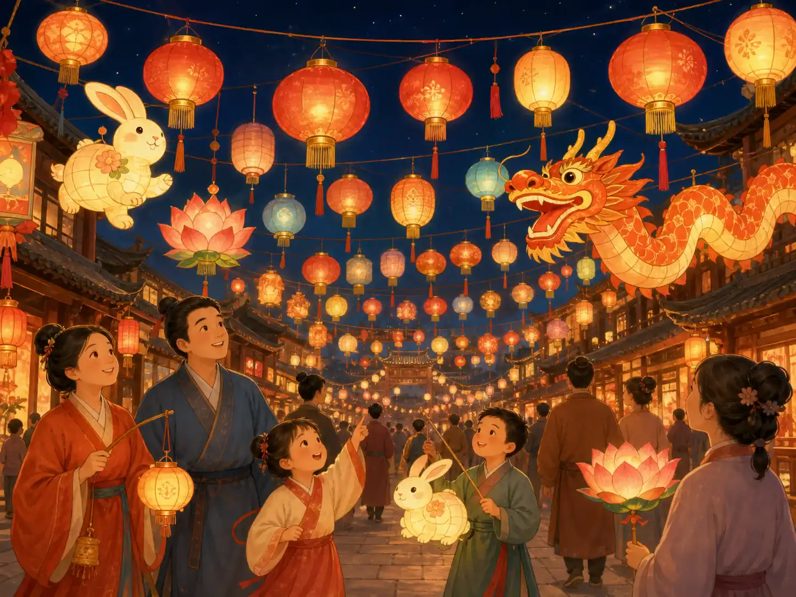
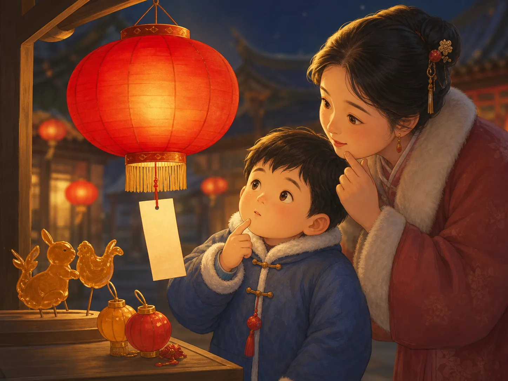

元宵节
Lantern Festival
Page 1
一碗圆圆的汤圆
A Bowl of Round Tangyuan

Tangyuan are white and round. Inside, they can hold black sesame filling or sweet red bean filling.
元宵节在农历正月十五，是春节快要结束的时候。这一晚，也是一年里第一个圆圆的月亮夜晚。
这一天，很多人会吃元宵或汤圆。它们白白的、圆圆的，咬开以后，里面常常有香香的黑芝麻馅，或者甜甜的红豆馅。
北方常叫“元宵”，南方常叫“汤圆”。很久以前，人们还叫过它“浮圆子”。名字变过，可它们都在说同一件事: 团圆。
它们做法也不太一样。有的像把馅轻轻包进小面团里，有的像让馅在糯米粉里滚来滚去，慢慢变成一个圆球。
为什么要做成圆圆的呢？因为圆形常常会让人想到一家人围坐在一起，热热闹闹，不分开。
The Lantern Festival falls on the fifteenth day of the first lunar month, near the end of the Chinese New Year season. It is also the first full-moon night of the lunar new year.
On this day, many people eat yuanxiao or tangyuan. They are white, round rice balls. When you bite one open, you may find fragrant black sesame filling or sweet red bean paste inside.
In the north, people often say yuanxiao. In the south, people often say tangyuan. Long ago, there were other names too. The names changed, but the meaning stayed the same: being together.
They are made a little differently too. Some are wrapped by putting the filling inside the dough. Some are rolled again and again in rice flour until they grow into a round ball.
Why make them round? Because a round shape often makes people think of family sitting close together.
Page 2
灯亮起来了
The Lanterns Light Up

At night, streets are often filled with lanterns in red, gold, and many other colors.
吃完元宵，热闹的灯会就开始了。
元宵节的晚上，很多地方都会挂起灯笼。有的像花，有的像兔子，有的连成一条长长的龙。
很久以前，人们过元宵节时，就喜欢一起出门看灯。后来灯越来越多，灯会也越来越热闹，有些地方还能一连热闹好几天。
所以元宵节也常常被叫作“灯节”。一到晚上，整条街亮起来，像把黑黑的夜晚变成了会发光的节日。
到了今天，灯会还是这个节日里最亮、最热闹的部分。
After people eat yuanxiao or tangyuan, the lantern fair begins.
On Lantern Festival night, many places hang up lanterns. Some look like flowers, some look like rabbits, and some join together to make a long dragon.
Long ago, people already loved going out to see the lights. Later, the fairs grew bigger and brighter, and in some places the celebration lasted for several days.
That is why people also call it the Festival of Lanterns. When night comes, whole streets glow, and the dark evening feels full of light.
Even today, the lantern fair is still the brightest and liveliest part of the festival.
Page 3
猜灯谜
Guessing Lantern Riddles

Some lanterns have little slips of paper hanging below them, each with a riddle to solve.
有些灯笼下面会挂着一张小纸条，上面写着一个谜语，这就叫“灯谜”。
猜灯谜像玩脑筋急转弯。开始时你也许会觉得奇怪，可是想一想，答案一下子就跳出来了。
很多灯会上，猜对灯谜的人还能拿到小奖品，比如小灯笼或小糖人。所以大人和孩子都很喜欢试一试。
你站在灯下，看看纸条，皱一皱眉，再忽然想到答案，这就是元宵节里最好玩的时刻之一。
Some lanterns have a small slip of paper hanging below them. On it is a riddle. That is called a lantern riddle.
Guessing lantern riddles is a little like playing a word game. At first the riddle may sound strange, but after thinking for a moment, the answer suddenly pops into your head.
At many lantern fairs, people who solve a riddle can win a small prize, such as a little lantern or a sugar figure. That is why both children and adults like to give it a try.
You stand under the lights, read the paper slip, think hard for a moment, and then suddenly smile when the answer appears. That is one of the most fun parts of the festival.
Page 4
一个关于灯火的老故事
An Old Story About Lantern Lights
很久以前，人们说天上有一只神鸟，因为迷了路，落到了人间。可是猎人不知道它是谁，一不小心把它射伤了。天帝知道以后，非常生气，想在正月十五这天降下大火，惩罚人间。
天帝的女儿心地善良，不忍心看到大家受苦，就偷偷把这个消息告诉了人们。大家吓坏了，不知道怎么办。后来，一位老人想出了一个办法。
老人说: “那就提前把灯都点起来吧。家家户户挂上红灯笼，再放烟火和鞭炮。这样天上往下一看，就会以为人间已经是一片火光了。”
大家照着做了。到了正月十五，整座城又红又亮，灯火通明。天帝从天上往下一看，以为人间已经着起了大火，就没有再降灾。
后来，人们就把这个故事和元宵节记在了一起。每到这一天，大家挂灯、看灯，也把平安和团圆的愿望放进亮亮的灯火里。
Long ago, people told a story about a magic bird from the sky. One day, it lost its way and came down to earth. A hunter did not know what it was and accidentally hurt it. When the Heavenly Emperor found out, he became very angry and wanted to send a great fire to the human world on the fifteenth day of the first lunar month.
But the emperor's daughter was kind. She did not want people to suffer, so she secretly warned them. Everyone was frightened and did not know what to do. Then an old man thought of a plan.
The old man said, "Let us light the town first. Every family can hang up red lanterns and set off fireworks and firecrackers. When the sky looks down, it will seem as if everything is already glowing with fire."
So the people did exactly that. On the night of the festival, the whole town shone red and bright. When the Heavenly Emperor looked down, he thought the fire had already happened, so he did not send another disaster.
Later, people remembered this old tale together with the Lantern Festival. On this day, they hang lanterns and look at lights, while also wishing for safety and togetherness.
灯火里的团圆
Together in the Lantern Light
元宵节用一碗甜甜的汤圆、满街亮亮的灯笼，还有好玩的灯谜，给春节画上一个温暖的句号。
当灯笼亮起来的时候，人们也把团圆、祝福，还有对新一年的开心盼望留在心里。
With a sweet bowl of tangyuan, bright lanterns, and playful riddles, the Lantern Festival brings the Chinese New Year season to a warm close.
When the lanterns glow, people also hold on to togetherness, good wishes, and happy hopes for the new year.